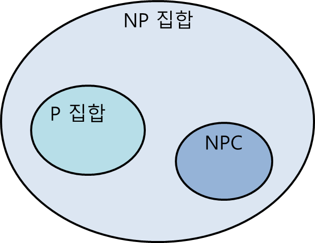
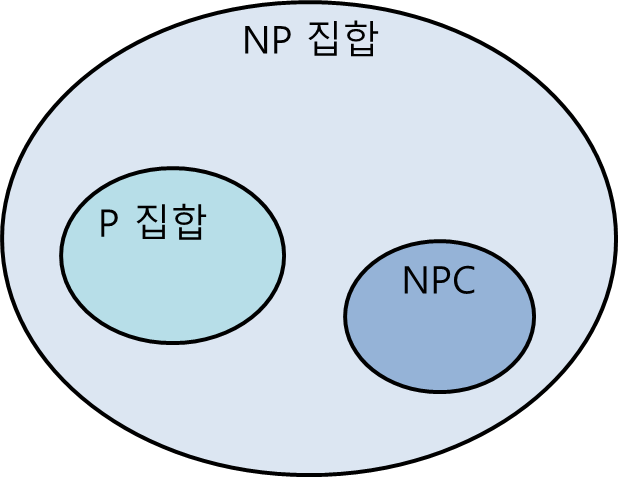

NP는 맞는 답을 주면, 그것이 맞다는 것의 검증이 효율적으로 이루어진다.
NP에는 P와 NPC가 포함되어 있으며 P와 NP가 같은지는 밝혀지지 않았다.
NP는 결정문제를 다룬다.

| 결정문제란 계산문제로 문제가 인스턴스가 주어졌을때 답이 예/아니오 로 도출되는 것을 의미한다. |
| [닫기] |
NP는 맞는 답을 주면, 그것이 맞다는 것의 검증이 효율적으로 이루어진다.
NP에는 P와 NPC가 포함되어 있으며 P와 NP가 같은지는 밝혀지지 않았다.
NP는 결정문제를 다룬다.
